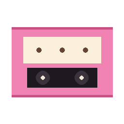

Record + replay candy-core sessions
Tee every Msg + every byte a candy-core Program emits into a cassette file, then drive a fresh Program through the same cassette and assert the output matches — byte-strict via ByteAssertion or cell-grid-strict via ScreenAssertion (powered by CandyVt).
composer require sugarcraft/candy-vcruse SugarCraft\Core\Program;
use SugarCraft\Vcr\Recorder;
(new Program($model))
->withRecorder(Recorder::open('/tmp/session.cas'))
->run();
// cassette is closed automatically when the loop ends.use SugarCraft\Vcr\Player;
use SugarCraft\Vcr\Assert\ScreenAssertion;
$player = Player::open('/tmp/session.cas');
$result = $player->play(
programFactory: fn ($input, $output, $loop) => new Program(
new MyModel(),
new ProgramOptions(input: $input, output: $output, loop: $loop, …),
),
assertion: new ScreenAssertion(80, 24),
);
if (!$result->ok) {
echo $result->diffSummary();
exit(1);
}Cassettes are streaming JSONL — each line is a self-contained event with t (absolute timestamp in seconds) or dt (delta since previous event). See the full schema reference for all event types and the header structure. Use Recorder::withFormat(new RelativeFormat()) to record in delta-time mode for deterministic, edit-friendly cassettes.
vendor/bin/candy-vcr inspect session.cas # list events
vendor/bin/candy-vcr replay session.cas --speed=realtime # stream to stdout
vendor/bin/candy-vcr diff a.cas b.cas # structural diff
vendor/bin/candy-vcr record --output session.cas -- bash -c 'echo hi' # record a PTY sessionrecord subcommandThe record subcommand spawns a PTY session and captures all I/O to a cassette file:
vendor/bin/candy-vcr record --output session.cas --cols 132 --rows 40 -- bash -l
vendor/bin/candy-vcr record --no-ctty -- /bin/echo 'hello' # non-interactive, no Ctrl+C wiring
vendor/bin/candy-vcr record --shell # spawn $SHELL -l
vendor/bin/candy-vcr record --env -- bash -c 'echo hi' # capture filtered host env
vendor/bin/candy-vcr record --env-regex='/(SECRET|TOKEN)/i' -- bash -c 'echo hi' # custom filter
vendor/bin/candy-vcr record --env-allow-secrets -- bash -c 'echo $API_KEY' # ⚠️ DANGEROUS — no filtering
vendor/bin/candy-vcr record --idle-trim 1.0 -- bash demo.sh # compress idle gaps > 1s (asciinema-style)replay subcommandStream a cassette's recorded output to stdout with optional timing control:
vendor/bin/candy-vcr replay session.cas --speed=realtime # honour recorded cadence
vendor/bin/candy-vcr replay session.cas --idle-trim=1.0 # clamp gaps > 1s during replay
vendor/bin/candy-vcr replay session.cas --no-trim # use original (uncompressed) timestamps⚠️ --env-allow-secrets disables all secret-key filtering. The cassette will contain credentials verbatim — only use in fully isolated, trusted environments and never share the resulting cassette.
t) or RelativeFormat (delta dt, asciinema v3 style), YAML secondary (hand-written test fixtures). Both round-trip through the same Cassette value object; Player::open() auto-detects format.Program::withRecorder() tees input bytes, output bytes (renderer + RawMsg + PrintMsg + cursor / title / mode), resize, and quit events.--record bug.cas, ships the cassette, maintainer replays locally.| Class | Method | Description |
|---|---|---|
| Recorder | open(path) | Open cassette for recording |
| Recorder | withFormat(format) | Select timestamp encoding (e.g. new RelativeFormat() for delta-time) |
| Recorder | close() | Close and finalize cassette |
| Player | open(path) | Open cassette for replay |
| Player | withIdleTrim(?float $seconds) | Fluent idle-gap threshold for SPEED_REALTIME playback (clamp pauses > N seconds) |
| Player | play(factory, assertion) | Replay session with assertion |
| ByteAssertion | new() | Strict byte-equality assertion |
| ScreenAssertion | new(cols, rows) | Cell-grid equality assertion |
| RelativeFormat | new() | Delta-time (dt) format — asciinema v3 compatible; easier manual editing |
| Cassette | events() | Iterate recorded events |